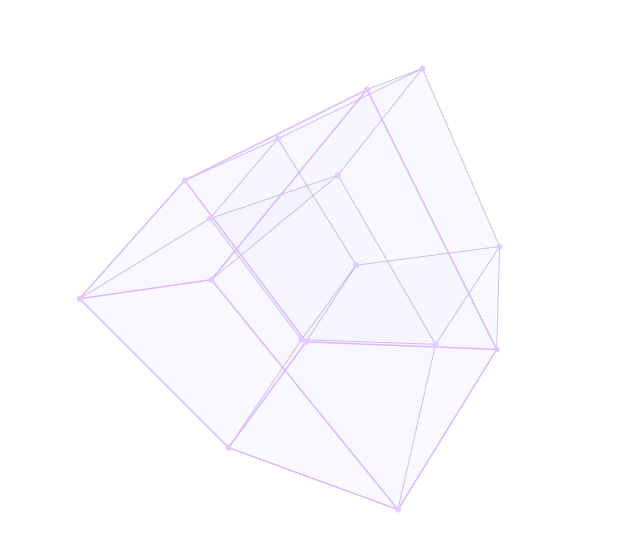
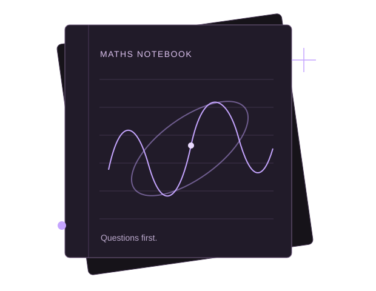

PalakSharma.
IIT Delhi · B.Tech ’29
An engineer in the making, following questions in mathematics, autonomous systems, and artificial intelligence. Sometimes, I build things to find the answers.

Tesseract4D → 3D → screen
16 vertices · 32 edges
Learning, by asking why.
B.Tech at IIT Delhi, class of 2029. Building a foundation in mathematics, engineering, and machine learning.
A curious mind.
An engineer in progress.
I’m a B.Tech student at IIT Delhi, class of 2029. I’m interested in the places where mathematics, engineering, and a good question meet—and especially in the strange, fascinating geometry of higher dimensions.
I’m exploring aerospace, autonomous systems, and machine learning, and working on embedded firmware with AXLR8R Racing. From a generative animation to an agentic system, I enjoy turning an idea into something I can actually experiment with.
This is my little corner of the internet: things I’m making, things I’m learning, and the mathematical rabbit holes I’d like to write about.
A few milestones.
Some challenges that pushed me to think a little harder.
- Tryst 20261st place
Stratazenith
Won the competitive game theory and strategic puzzle tournament at IIT Delhi, hosted by the Indian Game Theory Society.
- January 2026National top 10
eRaksha Hackathon
A national finalist among 1,000+ competing teams. Designed and developed an autonomous cybersecurity threat-detection agentic system with custom rule-based anomaly scoring.
- 2025AIR 1105
JEE Main
Achieved All India Rank 1105, placing in approximately the top 0.1% nationally.
- 2025AIR 4074
JEE Advanced
Achieved All India Rank 4074, securing admission to IIT Delhi.
Notes from the
rabbit hole.
A place for the mathematics I find interesting: higher-dimensional geometry, small observations, worked-through questions, and short papers. Not everything needs to be a grand theory to be worth sharing.
Open the maths notebookNo notes published yet. The notebook is just getting started.

Less talking.
More making.
A walkable 3D scan, drone simulation, mathematical play, spatial interfaces, and creative tools. The experiments have a room of their own.
Step into projectsPrefer the full picture?
My CV will be available here soon. Until then, you can explore my work or get in touch.